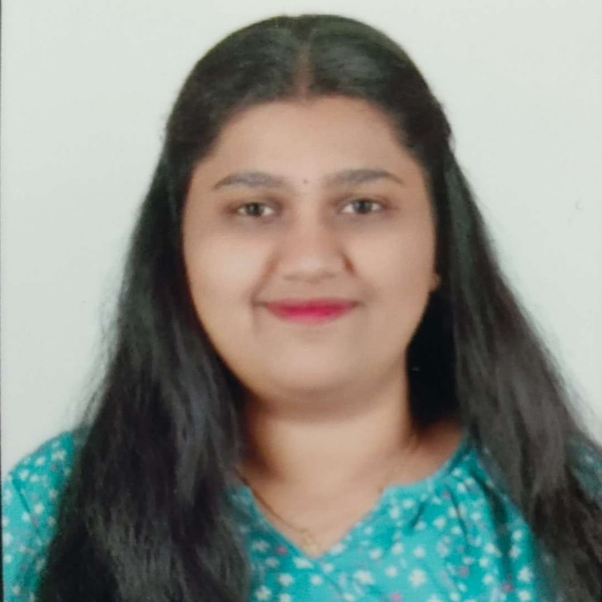

ADHYA K R
Electronics and Communication Engineering student with a solid foundation in JAVA and Web Technologies. Knowledgeable in analog and digital electronics, embedded systems, and IoT. Quick learner with a methodical approach to problem-solving and a keen interest in exploring emerging technologies

| Class | Institute name | Percentage |
|---|---|---|
| B.E | JNNCE | 86.1% |
| 12th | Sri Adichunchanagiri Independent Pre University Collage | 88.16% |
| 10th | Sri Adichunchanagiri Composite High School | 98.08% |
JAVA
Web-Technologies : HTML and CSS
Developed a remote-controlled floating bot designed to collect plastic and organic waste from water bodies using a conveyor mechanism. The system integrates sensors and microcontrollers to monitor fill levels and enhance environmental cleanup efficiency.
Developed a hybrid model combining automatic 3D U-Net segmentation with user-guided refinement to enhance accuracy in detecting lung nodules from CT scans
Took part in Intel DIYA’s Data Analytics Program in 2025—got hands on with Python, ML basics like clustering and logistic regression, and worked on Google Colab
Attended a PCB Designing and Drafting Workshop organized by JNNCE and IEEE/IETE in 2024—learned the ropes of PCB layout and design tools
As part of my Minor Degree at VTU, I completed Data Analytics with Python and Introduction to Artificial Intelligence—both were 3-credit courses that gave me a solid foundation in data handling and AI concepts